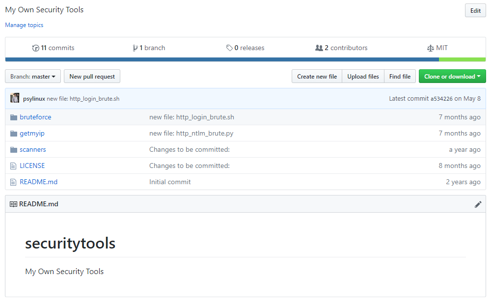

© 2021 psylinux
Copyright
Here is a collection of scripts and other security tools that I use for offensive security tests.

My Offensive Security Tools :: Here is a collection of scripts and other security tools that I use for offensive security tests.
POC-Compiler.sh :: Simple Bash Script to compile the PoC files in C or Assembly (nasm) without any protection.
Packer VM Templates :: This script will mount a auto file system using ssh and will open a ssh session with X11 Forward activated. You must set the Environment Variables first in order to use this script.
My Presentations :: Some of my presentations and published articles in different conferences".
Internet Speed Report :: Internet Speed Report is a simple command line script that automates internet speed testing by generating graphics report in .png format out of reports directory.
auto-ssh.sh :: This script will mount a auto file system using ssh and will open a ssh session with X11 Forward activated. You must set the Environment Variables first in order to use this script.